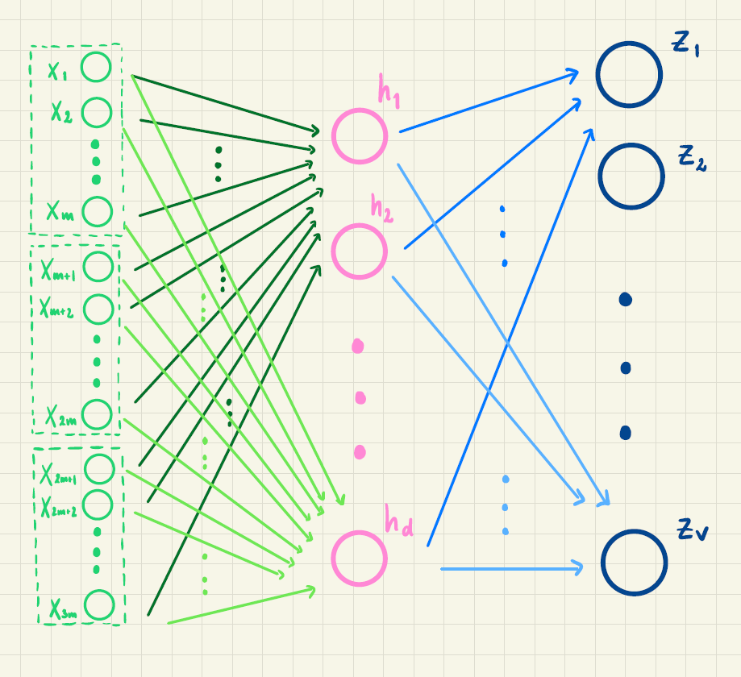

Del 4: Tekstgenerering med neurale netværk
Forventet tid ca. 60 min.
Aktivitet 1 - Antal parametre i modellen
Læs det første afsnit i noten Tekstgenerering med neurale netværk.
Vi betragter det kunstige neurale netværk med ét skjult lag, som skal bruges til tekstgenerering:

Hvad angiver \(m\), \(d\) og \(V\) i figuren?
Undersøg, hvor mange ord der cirka er i det danske sprog.
Antag, at alle ord repræsenteres ved en 3-dimensional vektor og at \(d=50\).
Hvor mange vægte indgår da i det neurale net?
Hvis alle ord repræsenteres ved en 100-dimensional vektor, hvor mange vægte skal så estimeres?
Undersøg hvor mange vægte (eller parametre, som de også kaldes) de store sprogmodeller har i dag (det præcise antal er en forretningshemmelighed, så du kan ikke finde det præcise svar!).
Aktivitet 2 - Beregning af sandsynligheder med neuralt netværk
Vi forestiller os, at vi har trænet et lille neuralt netværk, der kan beregne sandsynligheden for næste ord baseret på de to foregående ord. For at gøre eksemplet simpelt tillader vi kun to mulige næste ord, nemlig “spinder” og “danser”. Inputordene respræsenteres ved to-dimensionale vektorer. Netværket har følgende struktur, hvor outputtet \(z_1\) er sandsynligheden for “spinder”, og \(z_2\) er sandsynligheden for “danser”:
Vægtene, der indgår, i første lag er
| \(w_{1,0}\) | \(w_{1,1}\) | \(w_{1,2}\) | \(w_{1,3}\) | \(w_{1,4}\) | \(w_{2,0}\) | \(w_{2,1}\) | \(w_{2,2}\) | \(w_{2,3}\) | \(w_{2,4}\) |
|---|---|---|---|---|---|---|---|---|---|
| 1 | 0 | 1 | 1 | 5 | 2 | 4 | 2 | -1 | 3 |
Vægtene i andet lag er
| \(u_{1,0}\) | \(u_{1,1}\) | \(u_{1,2}\) | \(u_{2,0}\) | \(u_{2,1}\) | \(u_{2,2}\) |
|---|---|---|---|---|---|
| 0.5 | 1 | 2 | 0.2 | 0 | -4 |
Vægtene er delvist illustreret i figuren her:
Lad os sige, at vi som input har sætningen “En kat” og skal beregne sandsynligheden for næste ord. Ordene “en” og “kat” har vektorrepræsentationerne \[\vec{v}_{\text{en}} = \begin{pmatrix} 1\\-2\end{pmatrix}, \qquad \vec{v}_{\text{kat}} = \begin{pmatrix} 3\\0 \end{pmatrix}\] Vi vil bruge det neurale netværk til at beregne sandsynligheden for næste ord.
Opstil den 4-dimensionale vektor \(\vec{x}\), der skal bruges som input til netværket, ved at sætte vektorerne \(\vec{v}_{\text{en}}\) og \(\vec{v}_{\text{kat}}\) oven på hinanden.
Beregn \(h_1\) og \(h_2\) ved formlerne \[ \begin{aligned} &h_1= f(w_{1,0} + w_{1,1}x_1 + w_{1,2}x_2 + w_{1,3}x_3 + w_{1,4 } x_4)\\ &h_2= f(w_{2,0} + w_{2,1}x_1 + w_{2,2}x_2 + w_{2,3}x_3 + w_{2,4} x_4) \end{aligned} \] hvor \(f(x)=\frac{1}{1+e^{-x}}\) er den logistiske funktion.
Beregn \(y_1\) og \(y_2\) ved hjælp af formlerne \[ \begin{aligned} &y_1= u_{1,0} + u_{1,1}h_1 + u_{1,2}h_2 \\ &y_2= u_{2,0} + u_{2,1}h_1 + u_{2,2}h_2 \end{aligned} \]
Anvend softmax på \(y_1\) og \(y_2\) for at beregne \(z_1\) og \(z_2\). Det vil sige, beregn \[ \begin{aligned} z_1 &= \frac{e^{y_1}}{e^{y_1} + e^{y_2}}\\ z_2 &= \frac{e^{y_2}}{e^{y_1} + e^{y_2}} \end{aligned} \]
Hvilket af ordene er det mest sandsynlige næste ord?
Aktivitet 3 - Træning af netværk
Læs afsnittet Træning af netværk.
Vi forstiller os, at vi har ordnet ordene i vores ordforråd på denne måde:
\[ \begin{pmatrix} \vdots \\ \textrm{solen} \\ \textrm{månen} \\ \textrm{himlen} \\ \vdots \end{pmatrix} \]
Et sted i vores tekstkorpus står der
"jeg ser på månen"
og en række i træningsdata vil derfor være
| Input 1 | Input 2 | Input 3 | Target |
|---|---|---|---|
| \(\vdots\) | \(\vdots\) | \(\vdots\) | \(\vdots\) |
| jeg | ser | på | månen |
| \(\vdots\) | \(\vdots\) | \(\vdots\) | \(\vdots\) |
Targetvektoren \(\vec t\) for denne række er da
\[ \vec t = \begin{pmatrix} \vdots \\ 0 \\ 1 \\ 0 \\ \vdots \end{pmatrix} \] hvor der står \(0\) på alle de øvrige pladser.
Vi har trænet to netværk, som for dette træningseksempel har givet følgende outputvektor (på alle andre koordinater i vektoren står der \(0\))
\[ \textrm{Netværk 1:} \quad \vec z = \begin{pmatrix} \vdots \\ P(\text{solen } |\text{ "jeg ser på" }) \\ P(\text{månen } |\text{ "jeg ser på" }) \\ P(\text{himlen } |\text{ "jeg ser på" }) \\ \vdots \end{pmatrix} = \begin{pmatrix} \vdots \\ 0.25 \\ 0.61 \\ 0.14 \\ \vdots \end{pmatrix} \]
og
\[ \textrm{Netværk 2:} \quad \vec z = \begin{pmatrix} \vdots \\ P(\text{solen } |\text{ "jeg ser på" }) \\ P(\text{månen } |\text{ "jeg ser på" }) \\ P(\text{himlen } |\text{ "jeg ser på" }) \\ \vdots \end{pmatrix} = \begin{pmatrix} \vdots \\ 0.32 \\ 0.39 \\ 0.29 \\ \vdots \end{pmatrix} \]
Vis, at alle koordinater i \(\vec z\) kan fortolkes som sandsynligheder, og at summen af sandsynlighederne er 1.
Udregn bidraget til cross-entropy tabsfunktionen \(CE(\vec z, \vec t)\) for begge netværk.
Hvilket netværk ville du vælge på baggrund af bidraget til tabsfunktionen fra dette ene træningseksempel? Stemmer det overens med sandsynlighederne?
Aktivitet 4 - Tekstgenerering
Læs afsnittet Tekstgenerering.
Lad os se på at prædiktere det næste ord i sætninger, der ligner disse:
En hund løber efter en kat.
Løber en hund efter en kat?
En kat løber ikke efter en hund.
Efter en kat løber en hund.
Vi vil prædiktere ud fra de foregående to ord.
- Hvis der allerede står " En hund ", hvor mange forskellige muligheder er der så for det næste ord?
Antag at \[ \begin{align} P(\text{hund } |\text{ "en hund" }) &= 0.01 \\ P(\text{kat } |\text{ "en hund" }) &= 0.03 \\ P(\text{en } |\text{ "en hund" }) &= 0.17 \\ P(\text{efter } |\text{ "en hund" }) &= 0.27 \end{align} \]
- Hvilken værdi har \(P(\text{løber } |\text{ "en hund" })\) så?
Antag, at en transformer er trænet, så sandsynlighederne i modellen er optimeret til et træningsdatasæt. Vi har lige set de 5 sandsynligheder.
- Hvor mange sandsynligheder skal der være i alt?
Brug nu denne Excel-fil med sandsynligheder.
Givet “En hund” som de to første ord
Hvad er den mest sandsynlige sætning på 5 ord?
Hvor sandsynlig er den sætning?
Hvad er den mindst sandsynlige sætning på 5 ord?
Hvad er sandsynligheden for den sætning?
Hvor mange forskellige sætninger på 5 ord kan der dannes, når “En hund” skal være de to første ord?